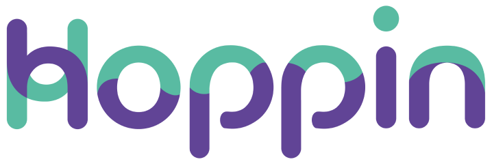
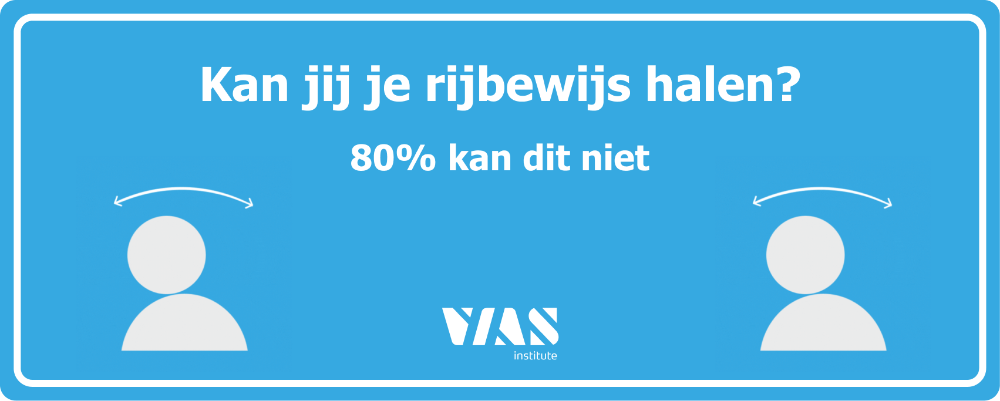

Projecten
Een selectie van interfaces, concepten en experimenten die samen mijn mix van UX, UI en development laten zien.
Van scherpe concepten tot speelsere webervaringen: alles hier is gebouwd met aandacht voor flow, detail en karakter.

Sensus
Een interactieve tool die jongeren leert nadenken over consent en grenzen.

Hoppin
Een vlottere mobiliteitservaring voor openbaar en gedeeld vervoer.

VIAS: Wegcodecheck
Een TikTok-filter die verkeerskennis op een speelse manier test.

Zen Garden Redesign
Eenzelfde HTML-structuur krijgt een volledig nieuwe visuele identiteit met CSS.

Memento Poster
Een bewegende poster over tijd, geheugen en verwarring.

Dynamic Typography
Typografie die betekenis zichtbaar maakt door beweging.

The Useless Web
Bewust nutteloze websites als speelse webexperimenten.

Little Sun
Een digitale werkomgeving voor duurzame landbouw en zonne-innovatie.

P.E.T
Kleine experimenten die mijn ontwikkeling als maker tonen.